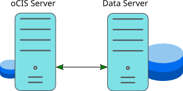
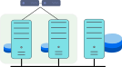
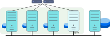
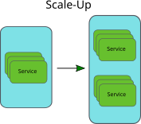
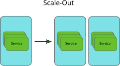
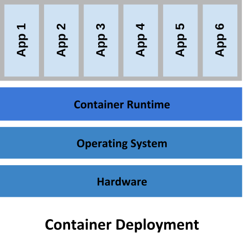
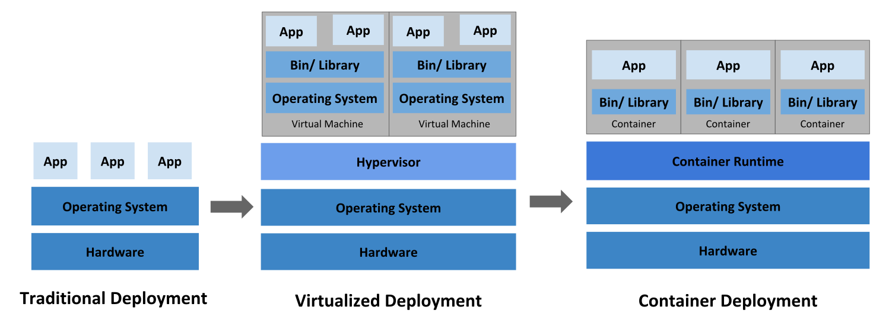

Availability and Scalability
Introduction
There are many ways to achieve availability and scalability, but certain aspects depend on each other and decisions have to be considered carefully to optimize the outcome. This guide gives a brief overview about running a modern, microservices-based software like Infinite Scale as a single or distributed instance.
Because Infinite Scale is by design enabled to run as a distributed service and not a static monolithic service block, you can achieve availability and scalability with well-made decisions. Due to this design, decisions made can always be revised and adapted to new requirements.
Terminology
- High availability
-
High availability is a method that groups servers that support applications or services that can be reliably used with a minimum amount of downtime.
- Scalability
-
Scalability means adding more instances.
-
Horizontal scalability, which is also known as scale-out, can be performed by adding more hardware resources like physical or virtual servers.
-
Vertical Scalability, also known as scale-up, can be performed by getting more powerful hardware that can either outperform the replaced one and/or run more services.
-
- Virtualization
-
Virtualization is the ability to abstract hardware, software or a deployment.
-
Virtualized hardware like VMWare, KVM, HyperV, VirtualBox etc.
-
Virtualized Linux operating systems in Docker containers.
-
Virtualization of a deployment, e.g. with Kubernetes.
-
Supporting Questions
The following questions may help in the decision:
-
What is the goal?
-
What do you want to protect against?
-
What measures are needed to achieve this protection?
-
How do you want to scale?
-
What is the level of complexity coming along with the measures taken like implementation, maintenance, ability to adapt to dynamic requirements, etc.?
-
What are the costs for implementation and runtime?
-
Will the measures taken result in the goal you have set?
This questionnaire is not static and more rounds may be needed to refine each item. With every round the result will become better and clearer. Tasks and actions can be taken and responsibilities can be defined.
Availability
Traditionally, availability concepts often focus on monolithic hardware and software components. This changes when you take a services-centered view. While a service may be up and running, it might not respond accordingly to requests because of scaling factors. This means for clients, the driver for the measures taken is not just "available". Using a sophisticated hardware setup can be one way to solve this. But it usually does not or only partially solves the scalability issues.
In Gartner’s report How Systems Complexity Reduces Uptime (pdf copy) from 2021, you can see that the more components you have the lower the resulting availability will be, which is especially true when using a bunch of monolithic software components.
The availability of a system with ten components, each having three-nines availability, is reduced to two-nines, increasing potential system downtime from 44 minutes per month to 7 hours 18 minutes per month.
In this quote, three-nines refers to 99.9%, while two-nines means 99%.
Single Server Setup
If you have Infinite Scale running on the same physical or virtual server where its configuration and the user data is located, a hard- or software failure of any component might require much bigger efforts to bring back the instance to production. Unavailability and/or data loss is more likely to occur.
- Summary
-
While such a setup may suffice for small environments or testing purposes, the efforts for protection, maintenance, backup and restore or migration to a more powerful environment, etc., must be carefully evaluated before starting production. As with any single server environment: Scalability is limited to vertical scalability.
Separating User Data
The first consideration in terms of availability, flexibility and scalability should be where to store user data. It is highly recommended to physically separate user data from the Infinite Scale instance and store them on a shared filesystem. See the Filesystems and Shared Storage section for supported types.
Separating the compute from the storage part may sound contrary with respect to the report about availability referenced above. Storage systems contribute with a static high availability number to the overall systems availability. This is because compute environments are more dynamic and storage environments are more static.

- Summary
-
Such a setup is also recommended for smaller environments or testing purposes. In case of a failure, it is much easier to fix the defect because of separated components. Scalability is still limited to vertical scalability.
Forms of High Availability
High Availability with its flavors active-active / active-passive layout or clustering provides redundancy by eliminating the node as a single point of failure. Multiple nodes are able to provide availability in these scenarios:
-
Software crashes, either due to operating system failure or unrecoverable applications.
-
Hardware failures, including storage hardware, CPU, RAM, network interfaces, etc.
-
Virtualization host system failures, including unplanned and scheduled maintenance.
-
Logically or physically severed network if the fail-over appliance is on a separate network not impacted by the failure.
-
Regular planned node maintenance.
- Summary
-
As there are many ways to implement a required scenario, ownCloud support cannot give advice for a particular solution that fits your needs but may be able to help you get the required Infinite Scale component ready to run.
For availability, storing user files is by nature mandatory to be on shared storage to be accessible by the nodes and/or services.
Classic High Availability
When using the classic form of high availability (HA), you can either create a setup where the nodes are both active (active-active) or one node only serves as a fallback, waiting for a failure to occur (active-passive). With an A-A setup, a load balancer is needed in front of the nodes. In case of a failure, the remaining node has to be capable of taking over all the load they shared before the other node failed.

- Summary
-
This use case can be considered if hardware availability is the primary objective. When using an active-active configuration, each node is addressed by a load balancer for load distribution. This requires that the nodes have the same setup and services are bound to the nodes. Scalability is hardware dependent and in case of an active-passive setup, you can even get reduced scalability.
Clustering
The main objective for clustering is not only availability but also distributing load across multiple nodes. With clustering a load balancer (LB) is mandatory.

- Summary
-
Clustering provides better availability and scalability for growing loads and covers fail-over if a node fails but it still focuses only on hardware. A cluster environment can grow very complex with many dependencies, see the section Availability. Scalability is much better but lacks when it comes to load-based dynamic assignment of services.
Scalability
There are two classic ways to achieve scalability, which is scale-up and scale-out.
| The pictures below show the different ways of classic scaling | |
|---|---|
 |
 |
What may sound simple with regard to a service, services can be a complex topic in reality as they may contain a lot of software components and their configuration building it. Adding more services or migrating a service can therefore be a challenging task adding complexity and can introduce sources of error.
- Summary
-
Scalability and availability are often aligned to each other and the decision how to achieve the goal set can be a complex task. This becomes even more true when dynamic load balancing comes into play. Because services consist of many components to take care of, real dynamic adaption and dynamic migration may be hard to achieve.
Container
Using a container to encapsulate a service can dramatically ease migration or multiplication of services, which also has an effect on availability. This is because a container is a standard unit of software that packages code and all its dependencies, so the application runs fast and reliably and can easily be moved from one computing environment to another.

- Summary
-
Containers are independent of the underlying infrastructure. Containers are portable across clouds and OS distributions.
Deployment Evolution
Kubernetes is software managing a cluster of Linux containers as a single system which is a further evolution in achieving the goal of availability and scalability.

- Summary
-
Thinking about Infinite Scale as a system providing microservices by design which is also delivered as container, you can abstract with Kubernetes the underlying infrastructure and focus on the services to be deployed when necessary, where necessary, with the degree of automation as required.